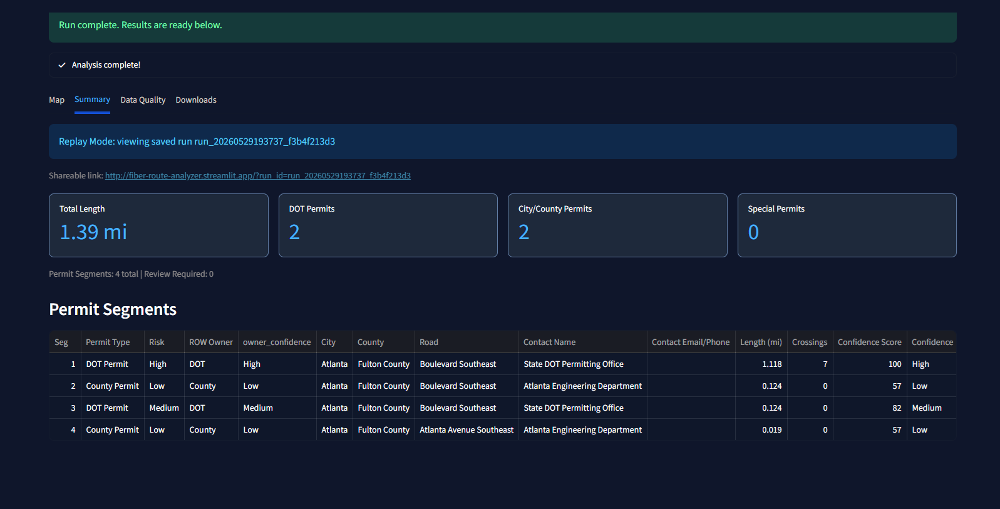
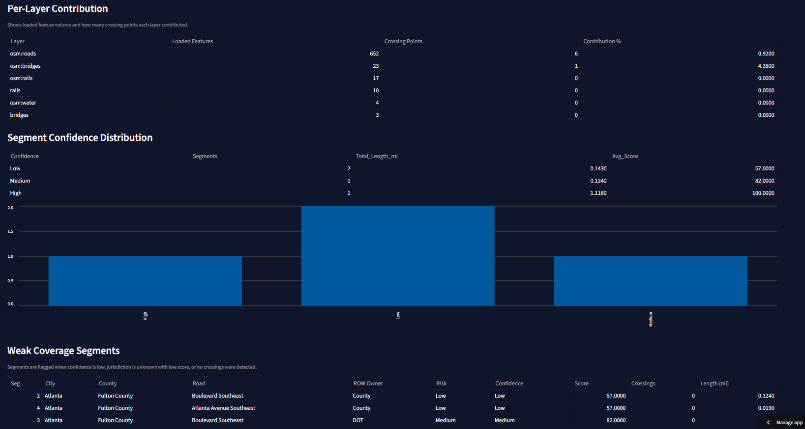
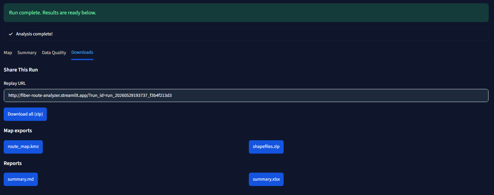

Case study · GIS · Permitting
Fiber Route Conflict Analyzer
Automated crossing detection that turns a proposed fiber route into a permit-ready package in under an hour.

// The problem
Days of map review per route
A proposed fiber route can cross dozens of jurisdictions and hundreds of features, and every crossing type sets which permit applies and who issues it. Reviewers worked through each route by hand on a map, layer by layer, and one route took 2–3 days. Missed crossings surfaced late, when they were most expensive.
// Engineering challenges
Unreliable sources
FeatureServers rate-limit, page results, time out, and change schemas without notice.
Mixed inputs
KML, KMZ, GeoJSON or zipped Shapefiles, in whatever CRS the designer used. Archives need guarding against unsafe paths.
Accurate geometry
Intersections and corridor buffers are measured in a projected CRS. Degrees give wrong lengths and missed crossings.
Trustworthy output
Reviewers need a confidence score per result and a view of where source data is weak.
// Architecture
Route file (KML/KMZ/GeoJSON/SHP)
│ loaders: format detection, archive safety, CRS normalization
▼
Route geometry (projected CRS)
│ ArcGIS FeatureServer(s)
│ │ child-layer discovery, pagination,
│ │ retry/backoff (429/5xx), TTL disk cache,
│ │ stale-data + schema-drift checks
▼ ▼
conflict_detector ◄──── reference layers (roads, rail, water,
│ bridges, pipelines, parcels, custom)
│ crossing type → risk class → confidence score
▼
permit corridors (city, county, road name, risk, confidence)
│
▼
exporters: KMZ · Shapefiles · Markdown report · Excel (summary + data-quality sheets)
│
Streamlit UI · Typer CLI · run replay snapshots
// Technical implementation
- Ingestion. One loader per format behind a shared base class. Archive handling rejects unsafe paths, and every route is normalized to one projected CRS before any measurement.
- FeatureServer client. Discovers child layers and queries them in parallel, pages with resultOffset and an objectIds fallback, retries transient failures with backoff, and caches responses on disk with a TTL.
- Source health. Checks each layer's last-edit age and schema, then warns before relying on stale or drifted data.
- Risk model. Crossings are classed Low (city/county), Medium (DOT) or High (water, bridges, pipelines, rail), each with a confidence score. Weak segments are flagged.
- Outputs. KMZ for Google Earth, zipped Shapefiles, a Markdown summary, and an Excel workbook with data-quality sheets.
- Delivery. A Streamlit app for reviewers, a CLI for batch runs, shareable run snapshots, and a pytest suite that runs in CI.
// Screenshots



// Measured impact